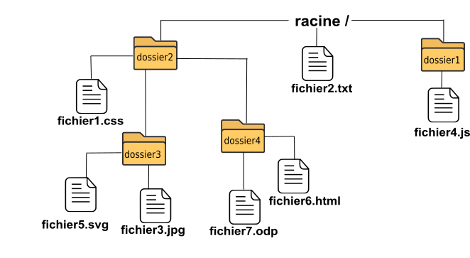

Dans la barre d'adresse de votre navigateur web vous trouverez, quand vous visitez un site, des choses du genre : http://www.ac-lille.fr/disciplines/informatiquelycee/index.html. Nous aurons l'occasion de reparler du "http" et du "www.ac-lille.fr" plus tard. La partie "/disciplines/informatiquelycee/index.html" s'appelle une URL.
Une URL (Uniform Resource Locator) permet d'identifier une ressource (par exemple un fichier) sur un réseau.
L'URL indique « l'endroit » où se trouve une ressource sur un ordinateur. Un fichier peut se trouver dans un dossier qui peut lui-même se trouver dans un autre dossier... On parle d'une structure en arborescence, car elle ressemble à un arbre à l'envers :

Comme vous pouvez le constater, la base de l'arbre s'appelle la racine de l'arborescence et se représente par un /.
Une autre représentation un peu plus "jolie":
Pour indiquer la position d'un fichier (ou d'un dossier) dans l'arborescence, il existe 2 méthodes :
Le chemin absolu doit indiquer « le chemin » depuis la racine. Par exemple l'URL du fichier fichier3.jpg sera : /dossier2/dossier3/fichier3.jpg
Remarque :Nous démarrons bien de la racine / (attention les symboles de séparation sont aussi des /).
Imaginons maintenant que le fichier fichier1.css fasse appel au fichier fichier3.jpg (comme un fichier HTML peut faire appel à un fichier CSS). Il est possible d'indiquer le chemin non pas depuis la racine, mais depuis le dossier (dossier2) qui accueille le fichier1.css, nous parlerons alors de chemin relatif : dossier3/fichier3.jpg
Remarque :Absence du / au début du chemin (c'est cela qui nous permettra de distinguer un chemin relatif et un chemin absolu).
Imaginons maintenant que nous désirions indiquer le chemin relatif du fichier fichier5.svg depuis l'intérieur du dossier dossier4.
Comment faire ?Il faut "remonter" d'un "niveau" dans l'arborescence pour se retrouver dans le dossier dossier2 et ainsi pouvoir repartir vers la bonne "branche" (vers le dossier3). Pour ce faire il faut utiliser 2 points : ..
../dossier3/fichier5.svg
Il est tout à fait possible de remonter de plusieurs "crans" : ../../ depuis le dossier dossier4 permet de "retourner" à la racine.
Soit la structure en arborescence suivante :

. . . . . . . . . . .. . . . . . . . . . . . . . . . . . . . . . . . . . . . . . . . . . . . . . . . . . . . . . . . . . . . .
. . . . . . . . . . .. . . . . . . . . . . . . . . . . . . . . . . . . . . . . . . . . . . . . . . . . . . . . . . . . . . . .
Remarque :La façon d'écrire les chemins (avec des slash (/) comme séparateurs) est propre aux systèmes dits « UNIX », par exemple GNU/Linux ou encore Mac OS. Sous Windows, ce n'est pas le slash qui est utilisé, mais l'antislash (\). Pour ce qui nous concerne ici, les chemins réseau (et donc le web), pas de problème, c'est le slash qui est utilisé.